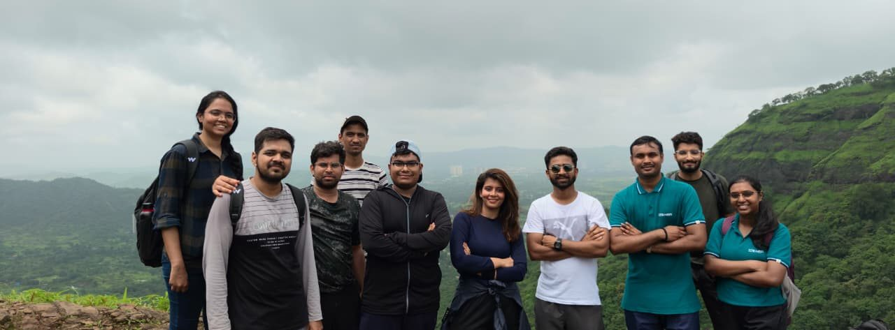

Our induction. Our story.
SEBI Grade A · Batch 2025–26
Three months.
Always with us.
The people, the places, the little moments. A home for everything we shared at NISM Patalganga.
130 people. Countless shared memories.


Find your way back
Every memory has a home.
Start with a familiar face, a favourite day, or a city we explored together.
01 / The chronicle
Our induction journey
From the opening ceremony to life beyond the lecture hall.
↗ 02 / On the roadVisits & attachments
Mumbai, Delhi, Ahmedabad, Hyderabad, and the institutions in our story.
↗ 03 / After classPlay. Trek. Perform.
Chess, cricket, trails, team activities, and Hindi Diwas.
↗A few favourite chapters
Step into a photograph.
Between the big moments
It was the everyday things, too.
A group photo. A change of scenery. A few minutes with the people around us.
The yearbook
All 130.
Still a batch.
Different backgrounds, a shared season at Patalganga. Find the faces that made the induction ours.
Find a batchmate ↗The ideas we took with us
Return to the classroom.
Browse the training sessions and the faculty who guided the learning.